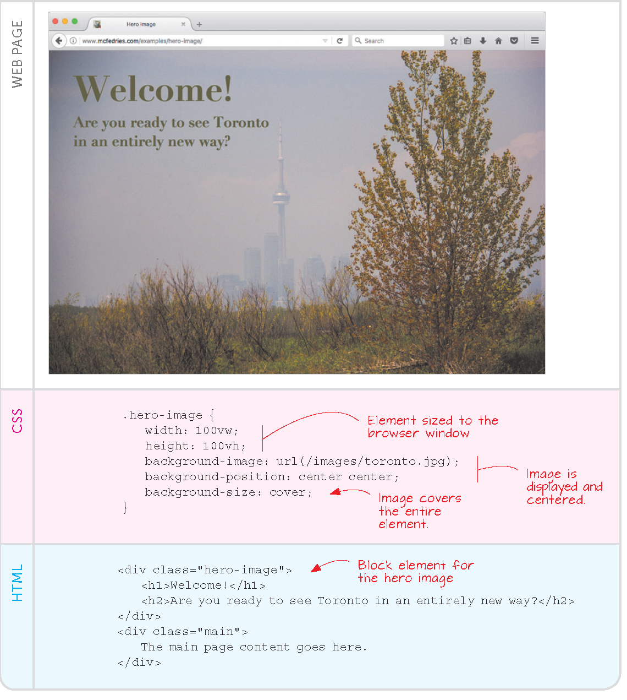

BiblioDOC: improve your information skills
Discover the introductory online course on bibliographic research.
Read more
Discover the introductory online course on bibliographic research.
Read moreExpress a personal evaluation of the teaching.
Read moreCOSP manages the procedures for activating internships at public and private organisations and companies for enrolled students, graduates and diploma holders.
Read moreVia Conservatorio 7
20122 Milano (MI)
M1 – Red line, San Babila
M4 – Blue line, San Babila
About 5 minutes on foot.
Lines 54 and 61 (Via Mascagni / Corso Monforte), line 96-97 (Via Visconti di Modrone).
Take the M4 (blue line) directly to San Babila.
Open in Google MapsStudying at COM gave me the skills and the confidence to start working in communication even before graduating.
The internship program and the professors' real-world experience made every lesson feel useful and connected to the job market.
Create your own landing page by typing up the following HTML/CSS code in here:
